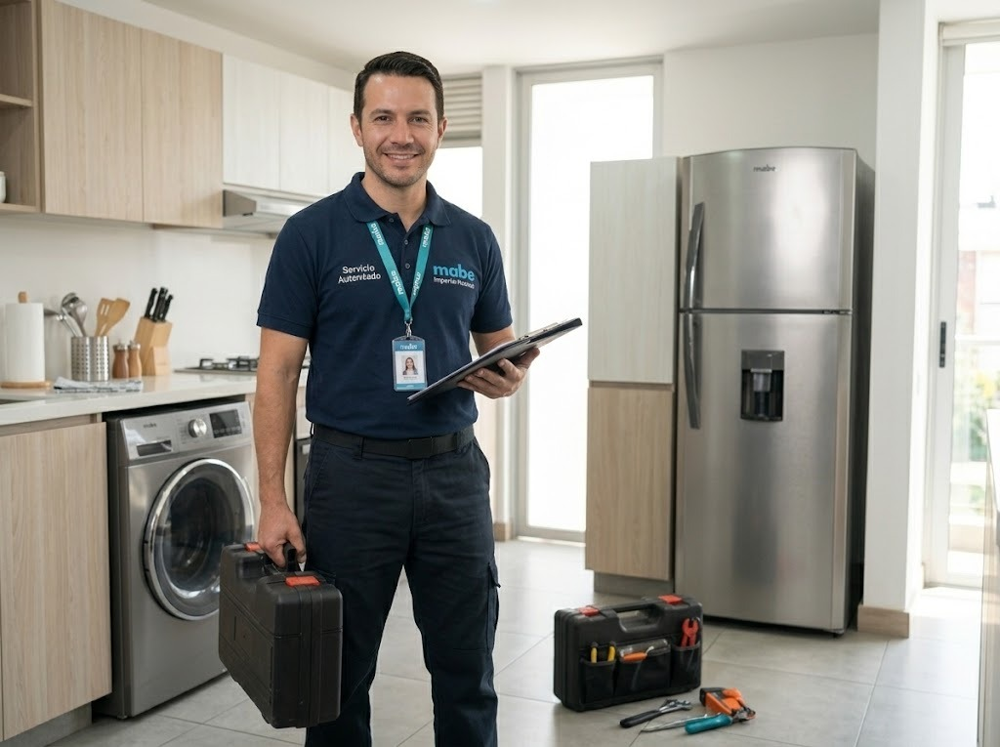

Servicio técnico de lavadoras Mabe en Panamá
Reparamos lavadoras Mabe de carga superior y de carga frontal a domicilio en Ciudad de Panamá: no centrifugan, no desaguan, hacen ruido, gotean o muestran códigos de error.

Qué lavadoras Mabe reparamos
- Carga superior
- Carga frontal
- Lavadoras con inverter y motor de transmisión directa
- Lavadoras con pantalla digital y códigos de error
- Lavasecadoras (lavan y secan en un solo equipo)
Fallas comunes de lavadoras Mabe y su causa probable
Estas son las que más vemos en Panamá. Si tu equipo tiene otro síntoma, escríbenos.
| Síntoma | Causa probable | Urgencia |
|---|---|---|
| No centrifuga o centrifuga con mucho ruido | Carga desbalanceada, amortiguadores o rodamientos desgastados, o problema del motor. | Revisar pronto |
| No desagua (queda agua en la tina) | Filtro de desagüe tapado, bomba de desagüe o manguera obstruida. | Revisar pronto |
| No llena de agua o llena muy lento | Llaves cerradas, malla de la manguera tapada, válvula de entrada o sensor de nivel. | Revisar pronto |
| Gotea o se sale el agua | Mangueras flojas, empaque de la puerta (en carga frontal), bomba o tina. | Urgente |
| La puerta no abre o no cierra | Seguro de la puerta (cerradura) o bisagra desgastada. | Revisar pronto |
| Vibra mucho o se desbalancea | Carga desbalanceada o patas sin nivelar. | Vigilar |
| Huele mal o tiene moho | Humedad, exceso de detergente, empaque sucio o filtro lleno de pelusas. | Vigilar |
| No enciende o se apaga en medio del ciclo | Tarjeta de control, tomacorriente, variaciones de voltaje o falla del seguro. | Urgente |
| Deja pelusas o la ropa sale con residuos | Filtro de pelusas saturado o roto, exceso de detergente. | Vigilar |
Todo sobre la lavadora Mabe
Más sobre lavadoras Mabe
Fallas de lavadoras Mabe
Lavadoras Mabe por zona
Guías sobre lavadoras Mabe
Códigos de error de la lavadora Mabe: qué significan y qué hacer
Qué hacer cuando tu lavadora Mabe muestra un código de error y qué revisar antes de llamar al técnico.
Leer →La lavadora Mabe no centrifuga: causas comunes
Si tu lavadora Mabe se queda con la ropa mojada y no centrifuga, revisa estas causas antes de llamar.
Leer →Moho y mal olor en la lavadora por la humedad de Panamá
El clima húmedo favorece el moho en la tina y el empaque. Cómo evitarlo y cómo limpiarlo.
Leer →Lo que más buscan sobre lavadoras Mabe en Panamá
Servicio técnico de lavadoras Mabe en Panamá
Reparamos lavadoras Mabe de carga superior y de carga frontal a domicilio en Panamá. Si tu lavadora no centrifuga, no desagua, no llena de agua, gotea, vibra de más, no enciende o muestra códigos de error en la pantalla, nuestro técnico la revisa en tu casa y te explica la falla antes de reparar.
Lavadoras Mabe de carga superior y frontal
Conocemos las líneas más usadas de Mabe: lavadoras de carga superior con agitador, de carga frontal y con sistemas de sensores que ajustan el ciclo. Revisamos tarjeta electrónica, bomba de desagüe, válvula de entrada de agua, seguro de la puerta, amortiguadores y rodamientos.
Fallas comunes de lavadoras Mabe y cómo evitarlas
La mayoría de problemas se previenen con hábitos simples: no sobrecargar el tambor, limpiar el filtro de desagüe, usar la cantidad de detergente adecuada, nivelar las patas y dejar la puerta entreabierta para evitar moho y mal olor, algo muy importante por la humedad de Panamá.
Lavadoras Mabe en apartamentos y torres de Panamá
En edificios coordinamos con la administración el horario, el ascensor de servicio y el ingreso de herramientas. En Panamá revisamos también el desagüe, las llaves de agua y la ventilación del cuarto de lavado, que muchas veces explican el problema.
¿Cuánto cuesta reparar una lavadora Mabe en Panamá?
Depende de la falla y de la pieza. Te damos el costo de la visita antes de ir y el de la reparación antes de empezar el trabajo, con garantía sobre la pieza y la mano de obra.
Preguntas frecuentes
¿Qué significan los códigos de error de la lavadora Mabe?
Cada modelo muestra códigos distintos; anota el código exacto de tu pantalla y escríbenos con el modelo.
¿Por qué mi lavadora Mabe no centrifuga?
La causa más común es una carga desbalanceada. Si pasa también con poca ropa, pueden ser los amortiguadores, el rodamiento o el motor.
¿Reparan lavadoras de carga superior y frontal?
Sí, atendemos las dos.
¿Puedo seguir usando la lavadora si gotea?
No lo recomendamos: el agua puede dañar el piso o las conexiones eléctricas. Cierra la llave y desconecta.
¿Cuánto cuesta la visita de diagnóstico?
Escríbenos por WhatsApp con el modelo y la falla; te confirmamos el costo de la visita antes de ir.
¿Atienden en apartamentos y torres?
Sí. Coordinamos horario y acceso con la administración del edificio.
Información oficial de Mabe
- Sitio oficial de Mabe: catálogo, manuales y especificaciones de tus equipos Mabe.
- Garantía de fábrica Mabe: consulta las condiciones de la garantía de tu equipo antes de pedir una reparación.
- Productos Mabe: modelos, medidas y funciones para identificar tu equipo.
Preguntas frecuentes sobre servicio técnico Mabe
Respuestas directas a lo que más se pregunta en Google y a asistentes de IA.
¿Por qué mi lavadora Mabe no centrifuga o centrifuga con mucho ruido?
Causa probable: carga desbalanceada, amortiguadores o rodamientos desgastados, o problema del motor. Qué revisar primero: Primero redistribuye la ropa. Si persiste con poca carga, hay que revisarla. Si el problema continúa, un técnico puede diagnosticarlo a domicilio.
¿Por qué mi lavadora Mabe no desagua (queda agua en la tina)?
Causa probable: filtro de desagüe tapado, bomba de desagüe o manguera obstruida. Qué revisar primero: Revisa el filtro de pelusas y la manguera. Si aparece un código de error, anótalo para el técnico. Si el problema continúa, un técnico puede diagnosticarlo a domicilio.
¿Por qué mi lavadora Mabe no llena de agua o llena muy lento?
Causa probable: llaves cerradas, malla de la manguera tapada, válvula de entrada o sensor de nivel. Qué revisar primero: Si aparece un código de error, anótalo para el técnico. Si el problema continúa, un técnico puede diagnosticarlo a domicilio.
¿Por qué mi lavadora Mabe gotea o se sale el agua?
Causa probable: mangueras flojas, empaque de la puerta (en carga frontal), bomba o tina. Qué revisar primero: Cierra la llave de agua y desconecta la lavadora mientras llega el técnico. Si el problema continúa, un técnico puede diagnosticarlo a domicilio.
¿Quién repara la lavadora Mabe a domicilio en Panamá?
Servicio Técnico Mabe Panamá repara lavadoras Mabe a domicilio en Ciudad de Panamá, San Miguelito y Panamá Oeste. Escribe por WhatsApp al +507 6933-7976.
¿Cuál es un servicio técnico Mabe a domicilio en Panamá?
Servicio Técnico Mabe Panamá (parte de Centro de Servicio Panamá) repara neveras, lavadoras y secadoras Mabe a domicilio en Ciudad de Panamá, San Miguelito y Panamá Oeste. Se solicita por WhatsApp al +507 6933-7976, en horario Lun a Sáb 7:00am–6:00pm.
¿Quién repara neveras, lavadoras y secadoras Mabe en Panamá?
Servicio Técnico Mabe Panamá atiende neveras y refrigeradoras, lavadoras de carga superior y frontal, secadoras y torres de lavado Mabe, con diagnóstico en el sitio, costo confirmado antes de reparar y garantía sobre la pieza y la mano de obra.
¿Cómo contacto al servicio técnico Mabe en Panamá?
Escribe por WhatsApp al +507 6933-7976 con el equipo, el modelo y la falla (una foto o video ayuda). Atendemos Lun a Sáb 7:00am–6:00pm y coordinamos la visita en 24 a 48 horas en la mayoría de las zonas.
¿Cómo encuentro un buen técnico Mabe cerca de mí en Panamá?
Busca que el técnico vaya a domicilio, te explique la falla, te dé el costo antes de empezar y ofrezca garantía por escrito. Servicio Técnico Mabe Panamá trabaja así y cubre más de 46 zonas de la ciudad y alrededores.
¿Qué zonas de Panamá cubre el servicio técnico Mabe?
Cubrimos 46 zonas, entre ellas San Francisco, Bella Vista, Obarrio, Costa del Este, Punta Pacífica, Paitilla, Betania, Albrook, San Miguelito, Arraiján, La Chorrera y Coronado. Escribe tu barrio por WhatsApp para confirmar.
¿Tu lavadora Mabe tiene una falla?
Escríbenos por WhatsApp con el equipo, el modelo y la falla. Te confirmamos disponibilidad para tu zona en minutos.